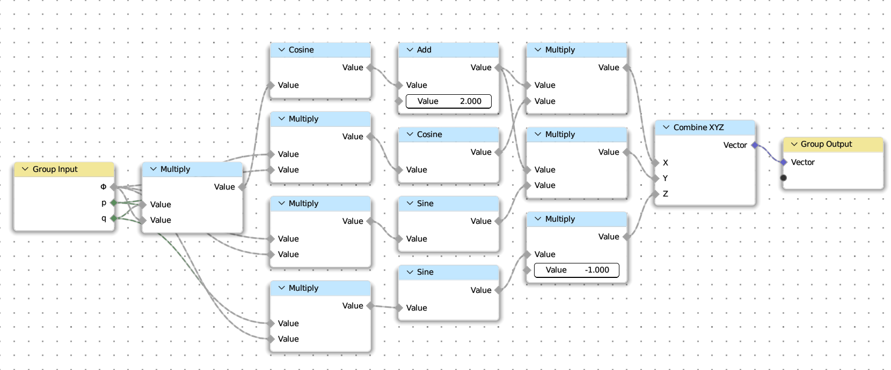

Quick Start#
Install Addon#

{kind=link}
{kind=link}
{kind=link}
When the addon installed, enable it. (check the box of Node: PyNodes).
Then the module pynodes is in your python path of blender,
and the UI will appear in the Sidebar of Node Editor of Blender.
The nodes in node editor can be arranged in real time with the parameters in UI.

Setup VSCode#
Tip
It is recommanded to use vscode to write python scripts for blender. Here are tutorials to setup vscode for blender python.
5 Steps to setup VSCode for Blender Python by CG Python (on Windows Mac Linux)
A Quick Example#
Target
Make a parametric Torus Knot

The (p,q)-torus knot winds q times around a circle in the interior of the torus, and p times around its axis of rotational symmetry. If p and q are not relatively prime, then we have a torus link with more than one component.
Parametric Equation#
The (p,q)-torus knot can be given by the parametrization:
The First Node Tree#
Define a node tree corresponding the parametric equation above:
Torus Knot Coord
{kind=link}
from pynodes import *
from pynodes.math import *
@tree
def torus_knot_coord(Φ: Float, p: Integer, q: Integer):
# The name of the function decorated by the decorator is treated as the name of the node tree
r = cos(q * Φ) + 2
x = r * cos(p * Φ)
y = r * sin(p * Φ)
z = -sin(q * Φ)
return CombineXYZ(x, y, z)
Note
The tree name will be converted from underscore to camel case.
Which means torus_knot_coord is converted to Torus Knot Coord.
If the decorated function has __docstring__, then use it instead.
More details see: pynodes.core.tree
Important
Type hinting in function signatures cannot be omitted. For normal python programs, type hints are dispensable, just like comments, and do not affect program execution. But in pynodes, the program relies on type hinting to work.
All valid types are subclasses of pynodes.core.Socket.
The Second Node Tree#
Make a curve circle, set the position of the curve by calling the function above.
Torus Knot Curve

@tree
def torus_knot_curve(
p: Integer = 2,
q: Integer = 3,
# End factor for trim curve (name, default, min, max)
e: Float = ("End", 1, 0, 1),
# The larger the value, the smoother the curve (name, default))
n: Integer = ("Sample", 128)
):
# Create a primitive curve circle node and assign the geometry of the output socket to `curve`
curve = CurveCircle(resolution=n)
# Call the node tree defined above as a function
pos = torus_knot_coord(curve.parameter.factor * 2 * pi, p, q)
# Use the obtained coordinates to set the position of the curve,
# and then create a trim curve node to trim the curve by the end factor.
curve = curve.set_position(position=pos).trim_factor(end=e)
# Create a frame, pass in the label of the frame.
with frame("Deal with the connection of endpoints problem"):
# All nodes created in the scope of the with statement will embeded in this frame
curve = curve.to_mesh().merge_by_distance().to_curve()
# The above operation is actually to align the normal lines
# at the beginning and end of the curve, so that when the mesh
# surface is generated later, it will not break
return curve
Default value of parameter
After being decorated by the decorator, the parameters of the function represent the group input. You can set a default value for the group input. By default, the name of the group input is the parameter name, or you can set it to a tuple, in which the elements represent: name, default, minimum, and maximum
About implementation logic
The function decorated by the decorator pynodes.core.tree, whether it is defined, or called, the parameters passed to it will not really be executed inside the function body, this point for python beginners, may be very confusing, but you only need to know that in the specific implementation of the decorator, with a set of methods(steal the beams and pillars and replace them rotten timber-perpetrate a fraud).
The Third Node Tree#
Then sweep the curve to mesh with a profile curve.
Torus Knot Mesh

@tree
def torus_knot_mesh(
p: Integer = 3,
q: Integer = 7,
e: Float = ("End", 1, 0, 1),
n: Integer = ("Sample", 256),
# The radius of the profile curve circle
r: Float = ("Profile Radius", 0.3)
):
# Call the node tree defined above
curve = torus_knot_curve(p, q, e, n)
# Sweep the curve to mesh with a profile curve
mesh = curve.to_mesh(CurveCircle(radius=r))
return mesh
Note
As you can see from the above example, the creation of a node can be achieved by a set of chain calls, which methods can be called depending on the data type of the port, and the advantage of strict type checking is that you can let the IDE automatically indicate which methods the current object has.
At this point, the Geometry node tree is created, and then you just need to add the geometry node modifier to an object in Blender, set the node tree to Torus Knot Mesh, and you will get the result effect!
Version with material#
Not only geometry nodes, material nodes are also supported. Modify the third function, and add a material function.
Version with material

@tree
def torus_knot_mesh(
p: Integer = 3,
q: Integer = 7,
e: Float = ("End", 1, 0, 1),
n: Integer = ("Sample", 256),
# The radius of the profile curve circle
r: Float = ("Profile Radius", 0.3)
):
# Call the node tree defined above
curve = torus_knot_curve(p, q, e, n)
# Store the parameter factor of the curve for shading
curve.store_named_attribute("factor", curve.parameter.factor)
# Sweep the curve to mesh with a profile curve
mesh = curve.to_mesh(CurveCircle(radius=r))
# return mesh
# Optional: set the shade smooth and set the material
return mesh.set_shade_smooth().set_material("Torus Knot")
@tree
def torus_knot():
"""@Material"""
shader = BSDF.Principled()
factor = Shader.attribute(name="factor").fac
color = GradientTexture(vector=factor).color
color = color.mix("#117f0f")
shader['Base Color'] = color
return shader
Note
When the __docstring__ starts with @Material (case insensitive),
then the tree represents a material node tree. More details see: pynodes.core.tree
Scene Management#
Besides, Scene management is also possible with pynodes
from pynodes.scene import *
scene = Tree({
O.cube: {
"location": (0, 0, 0),
Mod.geometry_nodes: {
"node_group": "Torus Knot Mesh",
"End": [(1, 0.0), (230, 1.0)], # Set keyframe for frame 1 and frame 230
},
},
}).load()
Caution
The submodule pynodes.scene is still under construction, very limited features are available at the moment.